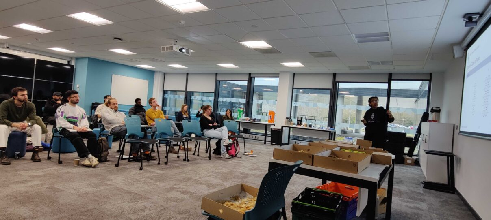

Research & Relevant Experience
University of Oxford — DPhil Student & Graduate Teaching Assistant
Conferences
MPLS AI & Ethics Conference
Invited & Academic Talks
OAISI Technical Roundtable
SIDur PGR Symposium
Quantum Tea Seminar — University of Toronto